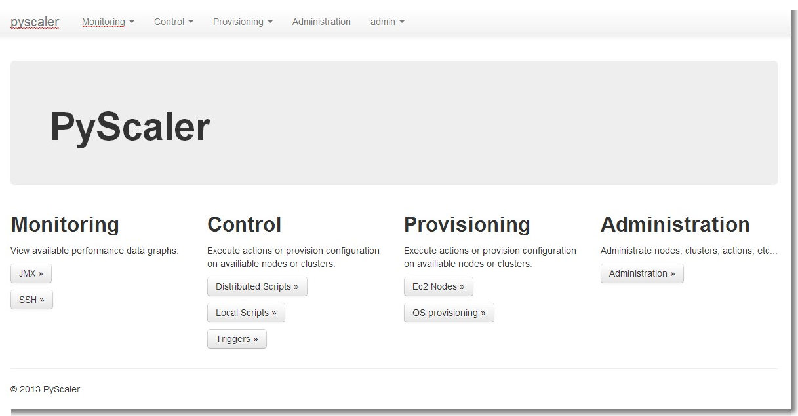
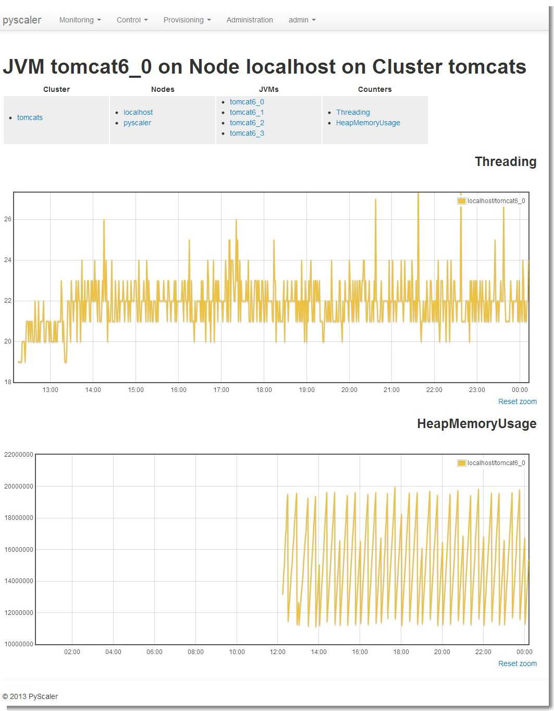
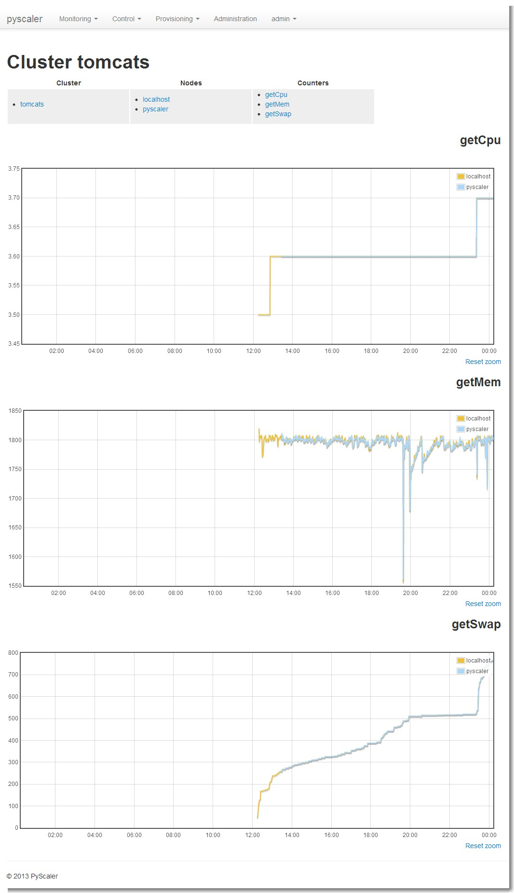
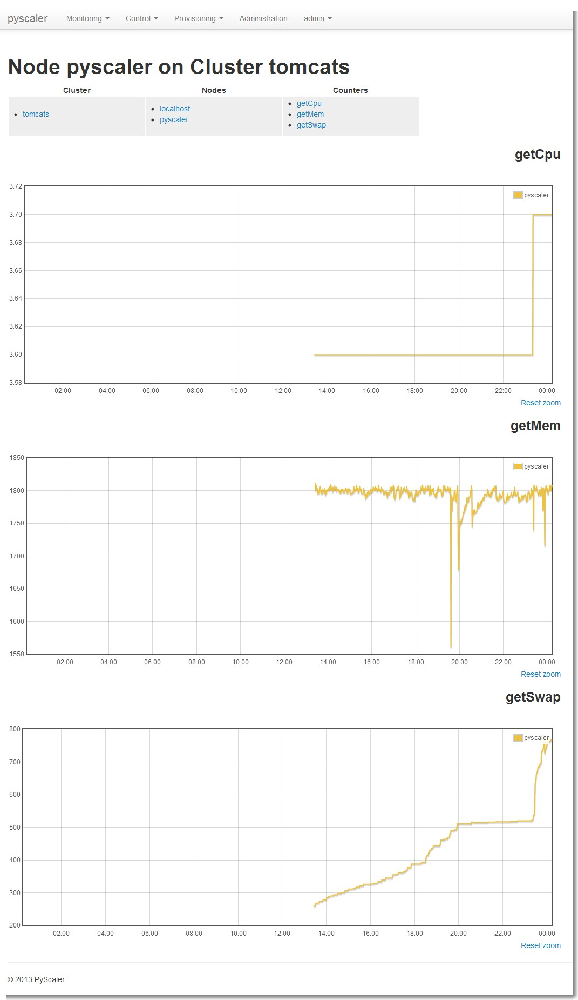
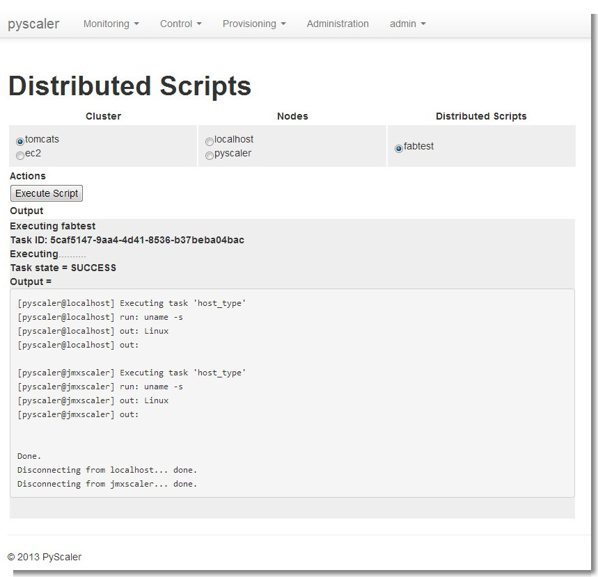
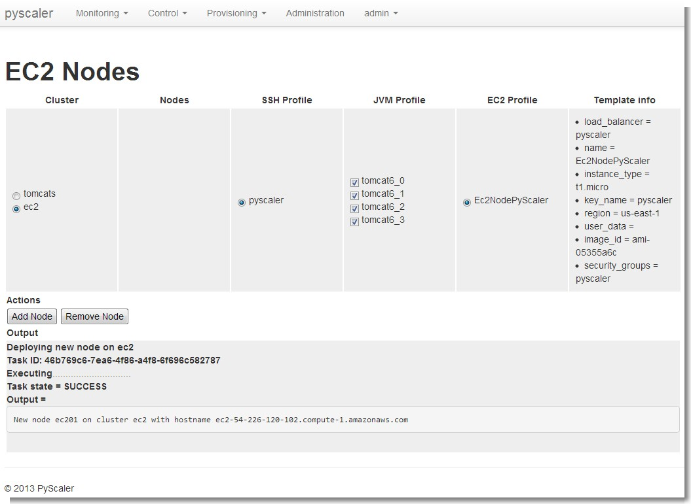

6. User Guide¶
The main interface of PyScaler can be accessed via web page. The exact address will very depending of the deployment type:
- If serving the Django application via Django’s runserver it will answer to something like http://pyscaler:8000
- If serving used a webserver such as Apache+mod_wsgi or Nginx+gunicorn, it will respond to something like http://pyscaler
6.1. Start page¶
The landing page is the following, where you can access all the PyScaler web interface.
6.2. Monitoring pages¶
From the monitoring pages you can access to the different performance graphs per cluster, node or jvm and counter type.
All the graphs in these pages can be zoomed by selecting areas in the graphs and then reseted back to its initial state by clicking on their zoom reset button.
6.2.1. JMX monitoring¶
- Cluster
Can be accessed through the menu Monitoring -> JMX -> Cluster

- Node
Can be accessed through the menu Monitoring -> JMX -> Node

- Jvm
Can be accessed through the menu Monitoring -> JMX -> Jvm
6.2.2. SSH monitoring¶
- Cluster
Can be accessed through the menu Monitoring -> Ssh -> Cluster
- Node
Can be accessed through the menu Monitoring -> Ssh -> Node
6.2.3. Control¶
- Execution of Distributed Scripts
Can be accessed through the menu Control-> Distributed Scripts
- Execution of Local Scripts
Can be accessed through the menu Control-> Local Scripts

6.2.4. Provisioning¶
- EC2 nodes provisioning
Can be accessed through the menu Provisioning -> Ec2 Nodes
- Operating system configuration
Can be accessed through the menu Provisioning -> OS configurations

6.2.5. Administration¶
All these screens can be accessed through the menu Administration
- Cluster administration

- Node administration
- EC2 profile administration

- JVM profile administration
- Ssh profile administration

- EC2Node profile administration
- Distributed Script administration
- Local Script administration
- Email administration
- JMX counter administration
- Trigger administration